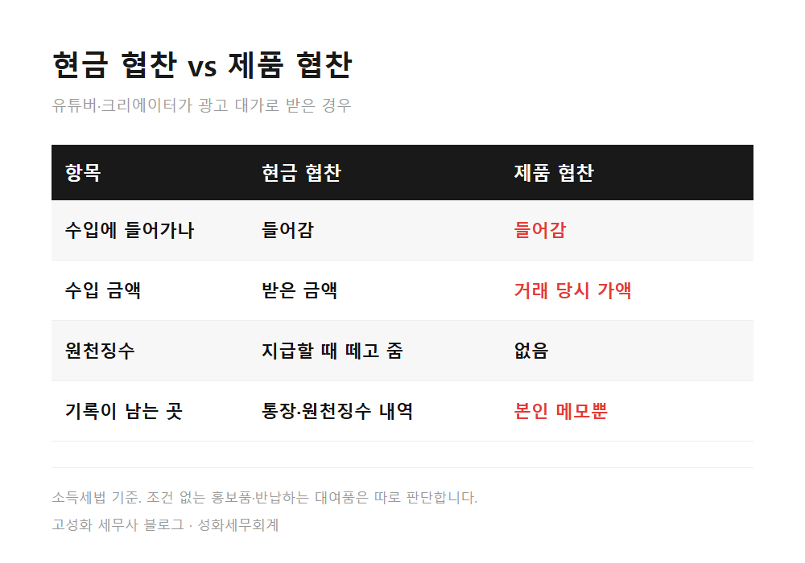
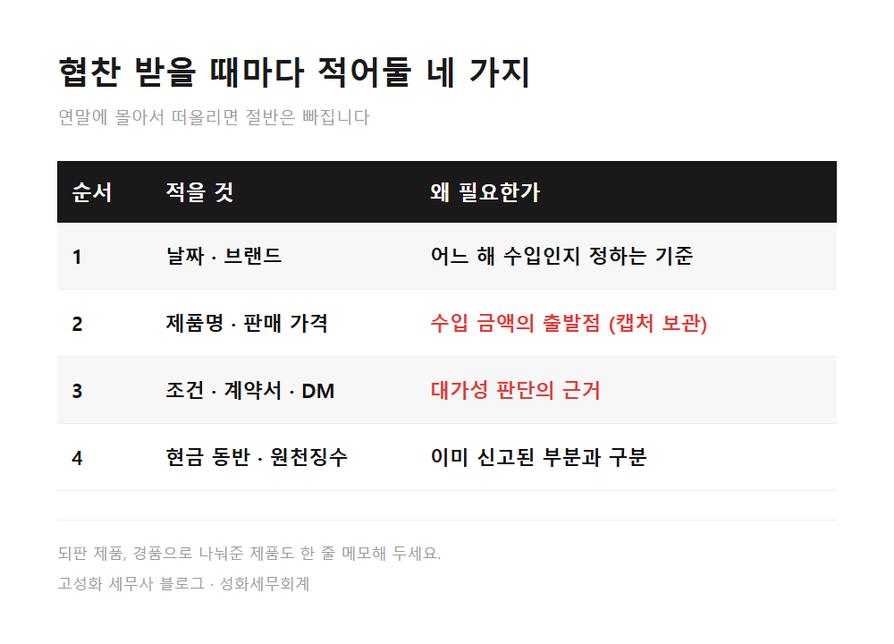
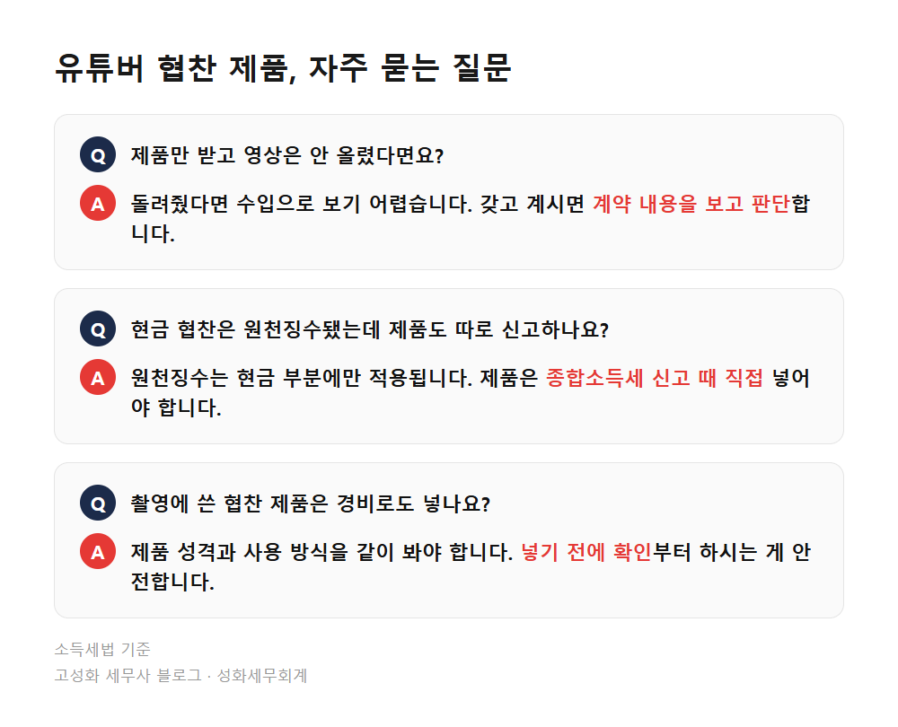

유튜버 협찬 제품 세금 신고, 물건도 수입일까
택배 상자가 또 왔습니다. 지난달 리뷰 영상을 올린 브랜드에서 보낸 신제품입니다. 돈은 한 푼도 안 받았으니 세금이랑은 상관없겠지, 하고 촬영 소품 선반에 올려두셨을 겁니다.
유튜버 협찬 제품도 영상 노출이나 리뷰를 조건으로 받은 것이라면 세금 신고 때 수입에 들어갑니다. 세법은 돈이 아닌 물건으로 받은 대가도 그 물건의 거래 당시 가액으로 수입을 계산하도록 하고 있습니다.
이 글은 이런 분들께 맞습니다. 광고비 대신 제품으로 협찬을 받고 계신 분, 현금 협찬과 제품 협찬이 섞여 있는 분, 그리고 지난 5월 신고 때 제품 협찬을 아예 빼고 신고하신 분입니다.
- 유튜버 협찬 제품이 수입으로 잡히는 이유
- 금액은 얼마로, 어디까지 넣어야 하나
- 협찬 받을 때마다 남겨둘 네 가지
한눈에 보기



자주 묻는 질문
협찬 제품을 받고 영상은 결국 안 올렸다면요?
조건을 지키지 않아 제품을 돌려줬다면 수입으로 보기 어렵습니다. 돌려주지 않고 갖고 계신다면 계약 내용을 보고 판단해야 합니다. 이 경우는 상황마다 달라 확인이 필요합니다.
현금 협찬은 원천징수가 됐는데, 제품 협찬도 따로 신고해야 하나요?
원천징수는 현금으로 받은 부분에만 적용됩니다. 제품으로 받은 부분은 종합소득세 신고 때 본인이 수입에 넣어야 합니다.
협찬 제품을 촬영에 썼으면 경비로도 넣을 수 있나요?
수입으로 잡은 제품을 사업에 쓴 경우의 처리는 제품 성격과 사용 방식을 같이 봐야 합니다. 한쪽만 넣거나 양쪽 다 넣기 전에 확인부터 하시는 게 안전합니다.
정리하면
유튜버 협찬 제품은 돈이 오가지 않아도 광고의 대가라면 수입입니다. 금액은 그 제품의 거래 당시 가액이 출발점이고, 조건이 있었는지, 과세사업자인지에 따라 신고할 범위가 달라집니다.
지금 올해 받은 협찬 목록부터 한 번 정리해보시는 게 좋습니다. 어디까지 넣어야 할지 혼자 판단하기 어려우시면 문의 주세요.
본문 전체와 근거 조문은 블로그에서 확인하실 수 있습니다.